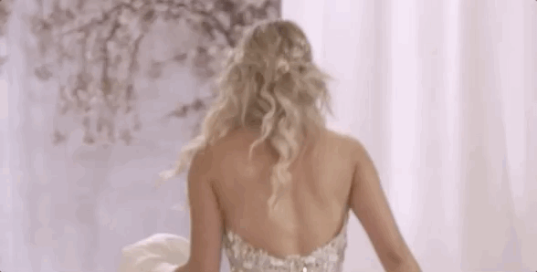
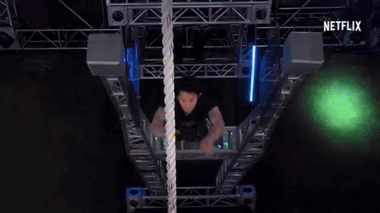

Apresentado por Giovana Ewbank, The Circle Brasil é a versão brasileira do reality show de sucesso americano The Circle. Na competição, oito participantes vivem em um apartamento e podem
se comunicar apenas por uma plataforma de controle por voz chamada de Circle. Assim, participantes poderão jogar como eles mesmos ou personalidades inventadas sem que a pessoa do outro lado da tela saiba.
Vale tudo para vencer o reality, sendo o participante mais popular entre todos os outros, conseguindo chegar até a final intacto em busca do prêmio de 300 mil reais.
Apresentado por Giovana Ewbank, The Circle Brasil é a versão brasileira do reality show de sucesso americano The Circle. Na competição, oito participantes vivem em um apartamento e podem se comunicar apenas por uma plataforma de controle por voz chamada de Circle. Assim, participantes poderão jogar como eles mesmos ou personalidades inventadas sem que a pessoa do outro lado da tela saiba. Vale tudo para vencer o reality, sendo o participante mais popular entre todos os outros, conseguindo chegar até a final intacto em busca do prêmio de 300 mil reais.
• Número de temporadas: 1 Temporada
• Emissora: Netflix Original
• Onde Assistir: Disponível na Netflix
Casamento as Cegas é a nova e polêmica série original Netflix. Nela, 15 homens e 15 mulheres participam de em experimento peculiar. Eles tem dez dias para conversarem uns com os outros - sem
nunca vendo-os pessoalmente, separados por cabines. No final do prazo, todos devem escolher algum participante para subir ao altar junto de si, casando-se sem nunca ao menos se encontrarem pessoalmente.
A série de 11 episódios foi gravada em 2018 e estreiou como um estrondoso sucesso dentro da plataforma, garantindo uma segunda temporada em breve.

Casamento as Cegas é a nova e polêmica série original Netflix. Nela, 15 homens e 15 mulheres participam de em experimento peculiar. Eles tem dez dias para conversarem uns com os outros - sem nunca vendo-os pessoalmente, separados por cabines. No final do prazo, todos devem escolher algum participante para subir ao altar junto de si, casando-se sem nunca ao menos se encontrarem pessoalmente. A série de 11 episódios foi gravada em 2018 e estreiou como um estrondoso sucesso dentro da plataforma, garantindo uma segunda temporada em breve.
• Número de temporadas: 1 temporada
• Emissora: Netflix Original
• Onde Assistir: Disponível na Netflix
No reality The Ultimate Beatmaster, 12 participantes enfrentam uns aos outros em perigosas e engenhosas pistas de obstáculos que exigem a mais pura atenção e prática física. A cada fim de temporada,
os vencedores dos emocionantes obstáculos de cada episódio competem entre si para disputarem o prêmio de 50 mil dólares e o título do Ultimate Beatmaaster.

No reality The Ultimate Beatmaster, 12 participantes enfrentam uns aos outros em perigosas e engenhosas pistas de obstáculos que exigem a mais pura atenção e prática física. A cada fim de temporada, os vencedores dos emocionantes obstáculos de cada episódio competem entre si para disputarem o prêmio de 50 mil dólares e o título do Ultimate Beatmaaster.
• Número de temporadas: 4 Temporadas
• Emissora: Original Netflix
• Onde Assistir: Netflix